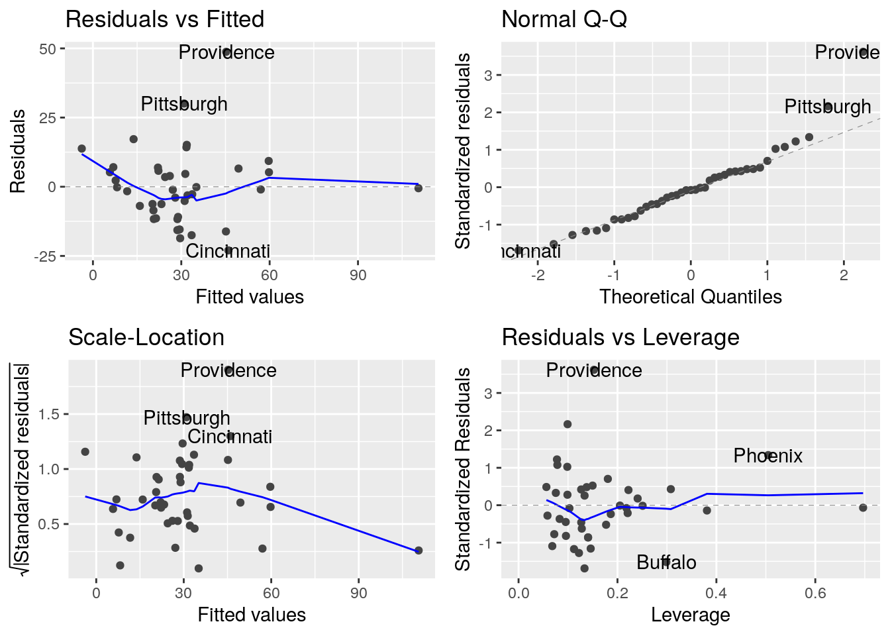

Régression multiple
Marie-Pierre Etienne
10/17/2019
library(ggplot2)
library(ggfortify)
library(tidyverse)
library(car)
library(sf)
library(maps)
library(rnaturalearth)Présentation
Pour étudier la pollution dans des villes américaine, on a mesuré différentes variables. Les valeurs présentées sont les moyennes annuelles des années 1969 à 1971.\ SO2 : Dyoxide de soufre augmente les risques de pluies acides\ temp : temperature \ manuf : nbre de societe employant plus de 20 salariés \ pop : population en milliers \ wind : vitesse moyenne du vent annuel en miles/Heure \ precip hauteur de precipitations annuelles en pouces \ days : nbre de jours de precipitations \
Chargement des données
usdata <- read.table("data/USAIR2.DAT", skip=8, header=T, sep=";",
colClasses=c("character", "numeric",
"numeric","numeric","numeric","numeric",
"numeric","numeric"),row.names=1
)
head(usdata)## SO2 temp manuf pop wind precip days
## Phoenix 10 70.3 213 582 6.0 7.05 36
## Little rock 13 61.0 91 132 8.2 48.52 100
## San Francisco 12 56.7 453 716 8.7 20.66 67
## Denver 17 51.9 454 515 9.0 12.95 86
## Hartford 56 49.1 412 158 9.0 43.37 127
## Wilmington 36 54.0 80 80 9.0 40.25 114Representation des villes
## [1] "Abilene TX" "Akron OH" "Alameda CA" "Albany GA" "Albany NY"
## [6] "Albany OR"##indices of studied cities in us.cities
ind.cities <- c(694, 509, 802, 247, 387, 990, 944, 429, 559, 41,
173, 422, 248, 988, 522, 609, 55, 250, 568, 443,
785, 650, 7, 5, 126, 180, 185, 195, 693, 700, 726,
549, 601, 225, 413, 794, 619, 753, 834, 165, 567)
sites <- us.cities[ind.cities,]
world <- ne_countries(scale = "medium", returnclass = "sf")
ggplot(data = world) +
geom_sf() +
geom_point(data = sites, aes(x = long, y = lat),
size = 2,
shape = 21, fill = "darkred") +
coord_sf(xlim = c(-130, -64), ylim = c(22, 50), expand = FALSE)
Description des données
Statistiques simples sur les données :
## SO2 temp manuf pop wind precip days
## 1 30.04878 55.76341 463.0976 608.6098 9.443902 36.76902 113.9024## SO2 temp manuf pop wind precip days
## 1 23.47227 7.227716 563.4739 579.113 1.428644 11.77155 26.50642Etude de la corrélation entre les variables :

Régression linéaire simple
##regression SO2 en fonction de manuf

Le SO2 en fonction du nombre d’entreprises.
## Analysis of Variance Table
##
## Response: SO2
## Df Sum Sq Mean Sq F value Pr(>F)
## manuf 1 9161.7 9161.7 27.75 5.363e-06 ***
## Residuals 39 12876.2 330.2
## ---
## Signif. codes: 0 '***' 0.001 '**' 0.01 '*' 0.05 '.' 0.1 ' ' 1Valeur des paramètres estimés et tests sur les paramètres :
##
## Call:
## lm(formula = SO2 ~ manuf, data = usdata)
##
## Residuals:
## Min 1Q Median 3Q Max
## -26.976 -12.968 -3.495 6.710 67.177
##
## Coefficients:
## Estimate Std. Error t value Pr(>|t|)
## (Intercept) 17.610574 3.691587 4.770 2.58e-05 ***
## manuf 0.026859 0.005099 5.268 5.36e-06 ***
## ---
## Signif. codes: 0 '***' 0.001 '**' 0.01 '*' 0.05 '.' 0.1 ' ' 1
##
## Residual standard error: 18.17 on 39 degrees of freedom
## Multiple R-squared: 0.4157, Adjusted R-squared: 0.4007
## F-statistic: 27.75 on 1 and 39 DF, p-value: 5.363e-06Effet levier des différents individus
## [1] 2## [1] 0.04878049Graphiques de diagnostics
Les différents graphiques de diagnostic fournis par R
Régression multiple
Mise en oeuvre de la régression multiple :
## Analysis of Variance Table
##
## Response: SO2
## Df Sum Sq Mean Sq F value Pr(>F)
## temp 1 4143.3 4143.3 19.3420 0.0001021 ***
## manuf 1 7230.8 7230.8 33.7549 1.521e-06 ***
## pop 1 2125.2 2125.2 9.9207 0.0033977 **
## wind 1 447.9 447.9 2.0909 0.1573365
## precip 1 785.4 785.4 3.6664 0.0639662 .
## days 1 22.1 22.1 0.1032 0.7499725
## Residuals 34 7283.3 214.2
## ---
## Signif. codes: 0 '***' 0.001 '**' 0.01 '*' 0.05 '.' 0.1 ' ' 1## Anova Table (Type II tests)
##
## Response: SO2
## Sum Sq Df F value Pr(>F)
## temp 892.5 1 4.1664 0.0490557 *
## manuf 3640.1 1 16.9929 0.0002278 ***
## pop 1443.1 1 6.7365 0.0138462 *
## wind 658.1 1 3.0723 0.0886504 .
## precip 427.3 1 1.9949 0.1669176
## days 22.1 1 0.1032 0.7499725
## Residuals 7283.3 34
## ---
## Signif. codes: 0 '***' 0.001 '**' 0.01 '*' 0.05 '.' 0.1 ' ' 1
Les valeurs estimées des paramètres
##
## Call:
## lm(formula = SO2 ~ ., data = usdata)
##
## Residuals:
## Min 1Q Median 3Q Max
## -23.004 -8.542 -0.991 5.758 48.758
##
## Coefficients:
## Estimate Std. Error t value Pr(>|t|)
## (Intercept) 111.72848 47.31810 2.361 0.024087 *
## temp -1.26794 0.62118 -2.041 0.049056 *
## manuf 0.06492 0.01575 4.122 0.000228 ***
## pop -0.03928 0.01513 -2.595 0.013846 *
## wind -3.18137 1.81502 -1.753 0.088650 .
## precip 0.51236 0.36276 1.412 0.166918
## days -0.05205 0.16201 -0.321 0.749972
## ---
## Signif. codes: 0 '***' 0.001 '**' 0.01 '*' 0.05 '.' 0.1 ' ' 1
##
## Residual standard error: 14.64 on 34 degrees of freedom
## Multiple R-squared: 0.6695, Adjusted R-squared: 0.6112
## F-statistic: 11.48 on 6 and 34 DF, p-value: 5.419e-07Sélection automatique de variables
Sélection de variables backward : {
## Start: AIC=226.37
## SO2 ~ temp + manuf + pop + wind + precip + days
##
## Df Sum of Sq RSS AIC
## - days 1 22.1 7305.4 224.50
## <none> 7283.3 226.37
## - precip 1 427.3 7710.6 226.71
## - wind 1 658.1 7941.4 227.92
## - temp 1 892.5 8175.8 229.11
## - pop 1 1443.1 8726.3 231.78
## - manuf 1 3640.1 10923.4 240.99
##
## Step: AIC=224.49
## SO2 ~ temp + manuf + pop + wind + precip
##
## Df Sum of Sq RSS AIC
## <none> 7305.4 224.50
## - wind 1 636.1 7941.5 225.92
## - precip 1 785.4 8090.8 226.68
## - pop 1 1447.5 8752.9 229.91
## - temp 1 1517.4 8822.8 230.23
## - manuf 1 3636.8 10942.1 239.06Sélection de variables forward :
stepus.forward <- step(lm(SO2~1,data=usdata), scope=~temp+pop+manuf+wind+precip+days
, direction="forward", k=log(length(usdata$pop)))## Start: AIC=261.48
## SO2 ~ 1
##
## Df Sum of Sq RSS AIC
## + manuf 1 9161.7 12876 243.16
## + pop 1 5373.2 16665 253.73
## + temp 1 4143.3 17895 256.65
## + days 1 3009.9 19028 259.17
## <none> 22038 261.48
## + wind 1 197.6 21840 264.82
## + precip 1 65.0 21973 265.07
##
## Step: AIC=243.16
## SO2 ~ manuf
##
## Df Sum of Sq RSS AIC
## + pop 1 3759.5 9116.6 232.72
## + temp 1 2212.3 10663.8 239.14
## + days 1 1816.1 11060.0 240.64
## <none> 12876.2 243.16
## + precip 1 124.7 12751.4 246.47
## + wind 1 80.6 12795.6 246.62
##
## Step: AIC=232.72
## SO2 ~ manuf + pop
##
## Df Sum of Sq RSS AIC
## <none> 9116.6 232.72
## + days 1 684.97 8431.7 233.23
## + temp 1 577.98 8538.7 233.75
## + precip 1 148.26 8968.4 235.76
## + wind 1 146.93 8969.7 235.76Sélection de variables stepwise :
## Start: AIC=226.37
## SO2 ~ temp + manuf + pop + wind + precip + days
##
## Df Sum of Sq RSS AIC
## - days 1 22.1 7305.4 224.50
## <none> 7283.3 226.37
## - precip 1 427.3 7710.6 226.71
## - wind 1 658.1 7941.4 227.92
## - temp 1 892.5 8175.8 229.11
## - pop 1 1443.1 8726.3 231.78
## - manuf 1 3640.1 10923.4 240.99
##
## Step: AIC=224.49
## SO2 ~ temp + manuf + pop + wind + precip
##
## Df Sum of Sq RSS AIC
## <none> 7305.4 224.50
## - wind 1 636.1 7941.5 225.92
## + days 1 22.1 7283.3 226.37
## - precip 1 785.4 8090.8 226.68
## - pop 1 1447.5 8752.9 229.91
## - temp 1 1517.4 8822.8 230.23
## - manuf 1 3636.8 10942.1 239.06